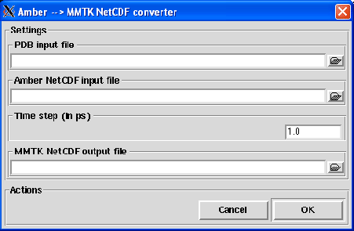

Next: CHARMM/X-PLOR to MMTK
Up: Trajectory conversion
Previous: Trajectory conversion
Contents
Amber to MMTK
This converter allows the conversion from a NetCDF trajectory generated with Amber 9 or 10 [26] to a MMTK NetCDF trajectory
(unfortunately, both NetCDF files do not follow the same convention). For version of Amber lower than 9, Amber provides some tools
for the conversion to Amber NetCDF trajectories. Pressing the Amber NetCDF to MMTK menubutton, the dialog shown in
figure 4.4 will pop up.
Figure 4.4:
The Amber to MMTK converter dialog.
|

|
To perform the conversion, the following input fields must be filled:
- PDB input file
Format: string
Default: None
Description: a PDB file of the system must be provided for the conversion. This file is necessary to build up the
MMTK universe related to the MMTK trajectory.
- Amber NetCDF input file
Format: string
Default: None
Description: the Amber 9 or 10 NetCDF trajectory file that contains all the trajectory frames.
- Time step (in ps)
Format: strictly positive float
Default: 1.0
Description: the time step in ps between two consecutive frames of the Amber NetCDF trajectory. You have to provide
this information because it is not contained in the Amber NetCDF trajectory file.
- MMTK NetCDF output file
Format: string
Default: None
Description: the name of the MMTK NetCDF trajectory that will be written. Once, an Amber NetCDF
file has been loaded, a default name for the MMTK NetCDF output file will be proposed. This default name will be
file_mmtk.nc if file.nc is the Amber NetCDF trajectory file name.
Next: CHARMM/X-PLOR to MMTK
Up: Trajectory conversion
Previous: Trajectory conversion
Contents
pellegrini eric
2009-10-06